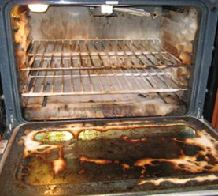

Oven's Epilogue
In the 80's this appliance was manufactured or 'born' in a dark, dreary Whirlpool factory in Detroit, Michigan and christened as ACG900IX. He was later affectionately named "Oven" by his fellow appliances. He sat on display trapped in packaging for months in an electronic shop with many others just like him. He hated it. He felt opressed and uncomfortable for that period of his life. The day when a young couple came to the shop and picked him over all of the others was the greatest day in his life. He could finally do what he was 'born' to do. He was one of the first to grace the kitchen of the new house the couple had bought. This made Oven feel special, like he was needed. Almost everyday he was used, from searing magnificent sirloin steak to cooking pizza and chips. He got quite dirty at times but was nearly always cleaned every week. He was looked after. Every now and then, he had a night off, the take-away night as the couple called it. At the start, Oven was pretty lonely as he was one of the only appliances in the kitchen. Over time many more arrived, each one more modern and complicated than the last.
Oven was pretty quiet and tended to stay quite neutral with all of the others. He had no enemies but also never really had any good friends. He was respected immensely by the others due to his experiences and his age. He was there for all the major events in the kitchen, the good and the bad. He saw romances, bromances, arguments and even the deaths and replacements of his fellow appliances. He was the all-seeing, all-knowing and elderly appliance of the kitchen. If anyone needed advice, Oven was the man to go to. His proudest moment in the kitchen came when he was chosen as the site for the marriage of Kettle and Toaster. The only person Oven was ever jealous of was Microwave. Microwave was the most hated appliance in the kitchen because of his attitude and use of profanities but Oven didn't mind this. Oven hated how fast he could cook compared to him. Even though he always heard from the family that food from Microwave was never as nice, he was still a bit jealous of him. In general, Oven was looked after extremely well. There were a few dodgy moments such as the time a Pyrex dish exploded in the oven and when the element of the oven broke but it was always fixed and he was never replaced with a newer model. Oven was the best looked after home appliance in the kitchen and was a far cry from some of the rest of them. To this day, Oven is still going strong.


'Born' in a dark, dreary Whirlpool factory in Detroit